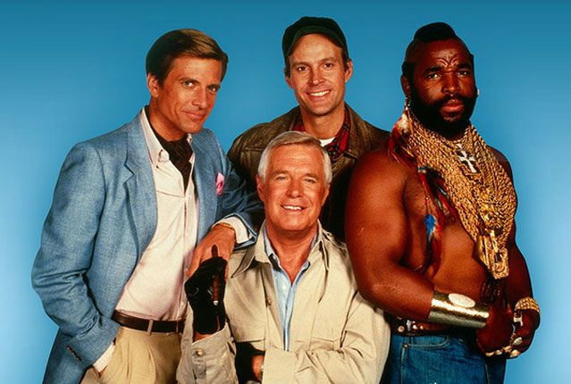

Esquadrão Classe A
Introdução
Esquadrão Classe A foi uma série de televisão que marcou os anos 80 e se tornou um fenômeno de popularidade em todo o mundo. Criada por Stephen J. Cannell e Frank Lupo, a série estreou em 1983 e durou cinco temporadas, até 1987. Com seu elenco carismático e tramas repletas de ação, Esquadrão Classe A conquistou uma legião de fãs e se tornou um clássico da cultura pop.
A série contava a história de um grupo de quatro veteranos da Guerra do Vietnã que, acusados de um crime que não cometeram, decidem agir como mercenários, lutando contra o crime e protegendo os inocentes enquanto fogem das autoridades militares que os perseguiam implacavelmente. O Esquadrão Classe A era formado por quatro membros únicos, cada um com habilidades especiais e personalidades distintas.
O líder do grupo era John "Hannibal" Smith, interpretado pelo carismático George Peppard. Hannibal era o estrategista e o cérebro por trás das operações do Esquadrão Classe A. Ele era conhecido por sua inteligência afiada, seu carisma e sua habilidade de planejar e executar missões complexas.
Templeton "Face" Peck, interpretado por Dirk Benedict, era o especialista em disfarces e charme do grupo. Ele era o responsável por conseguir recursos e informações valiosas por meio de suas habilidades de persuasão e seu apelo com as mulheres.
"Howling Mad" Murdock, interpretado por Dwight Schultz, era o piloto maluco do Esquadrão Classe A. Ele era conhecido por sua personalidade excêntrica, seu amor por aviões e helicópteros e sua capacidade de se infiltrar em lugares aparentemente inacessíveis.
E, é claro, não poderíamos esquecer de B.A. Baracus, interpretado pelo icônico Mr. T. B.A. era o membro durão do Esquadrão, especialista em combate corpo a corpo e em pilotar veículos. Ele tinha um estilo inconfundível, com seus colares de ouro, suas roupas chamativas e seu famoso corte de cabelo moicano.
Juntos, esses quatro membros formavam uma equipe invencível, enfrentando perigosos vilões e ajudando pessoas em apuros. A série era uma mistura perfeita de ação, humor e camaradagem, com cada episódio trazendo uma nova missão cheia de reviravoltas e emoção.
Esquadrão Classe A foi um sucesso estrondoso, conquistando uma base de fãs fiel e ganhando popularidade em todo o mundo. A série se destacava pela sua combinação única de ação explosiva, comédia leve e personagens cativantes. Os episódios eram cheios de cenas de luta emocionantes, perseguições de carros espetaculares e explosões espetaculares, tudo isso acompanhado de diálogos marcantes e humor irreverente.
Além do sucesso na televisão, Esquadrão Classe A também ganhou um filme para o cinema em 2010, trazendo uma nova geração de atores interpretando os famosos personagens. No entanto, a série original sempre será lembrada como um clássico da televisão dos anos 80, que marcou uma geração e deixou um legado duradouro na cultura pop.
Mesmo décadas após o seu lançamento, Esquadrão Classe A continua sendo amado pelos fãs antigos e conquistando novos admiradores. A química entre os personagens, as missões emocionantes e o espírito de camaradagem tornaram a série uma referência no gênero de ação e uma fonte de inspiração para muitas outras produções. Esquadrão Classe A é um exemplo atemporal de entretenimento divertido e emocionante, que nunca deixará de encantar os espectadores.
Imagens